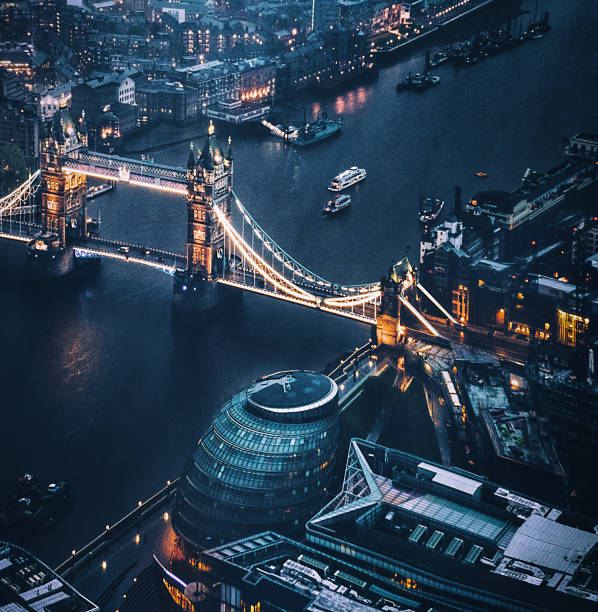
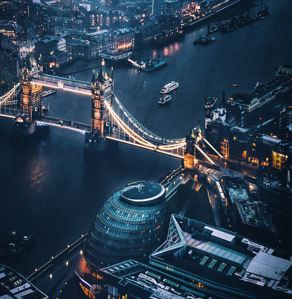

London
The capital of England
 

Information
- Population: 9,541,000
- Country: United Kingdom
Description
London is the capital and largest city of England and the United Kingdom, with a population of just under 9 million. It stands on the River Thames in south-east England at the head of a 50-mile (80 km) estuary down to the North Sea, and has been a major settlement for two millennia. The City of London, its ancient core and financial centre, was founded by the Romans as Londinium and retains its medieval boundaries. The City of Westminster, to the west of the City of London, has for centuries hosted the national government and parliament. Since the 19th century, the name "London" has also referred to the metropolis around this core, historically split between the counties of Middlesex, Essex, Surrey, Kent, and Hertfordshire, which largely comprises Greater London, governed by the Greater London Authority.